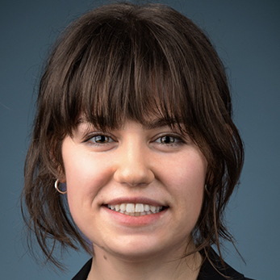
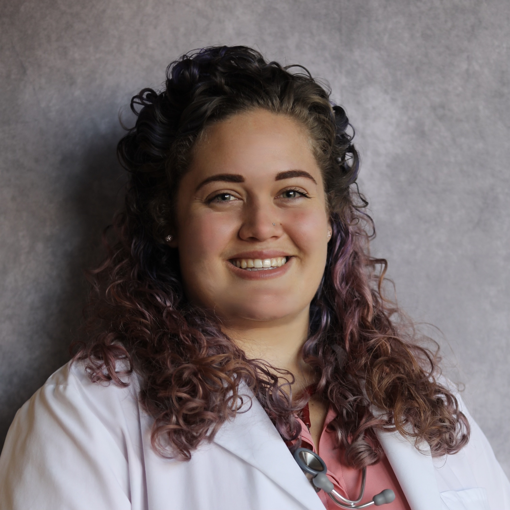
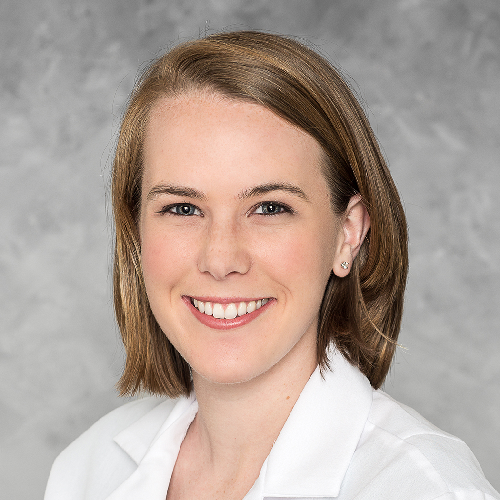
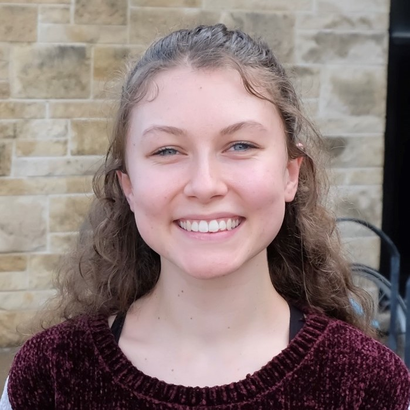
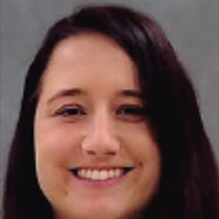
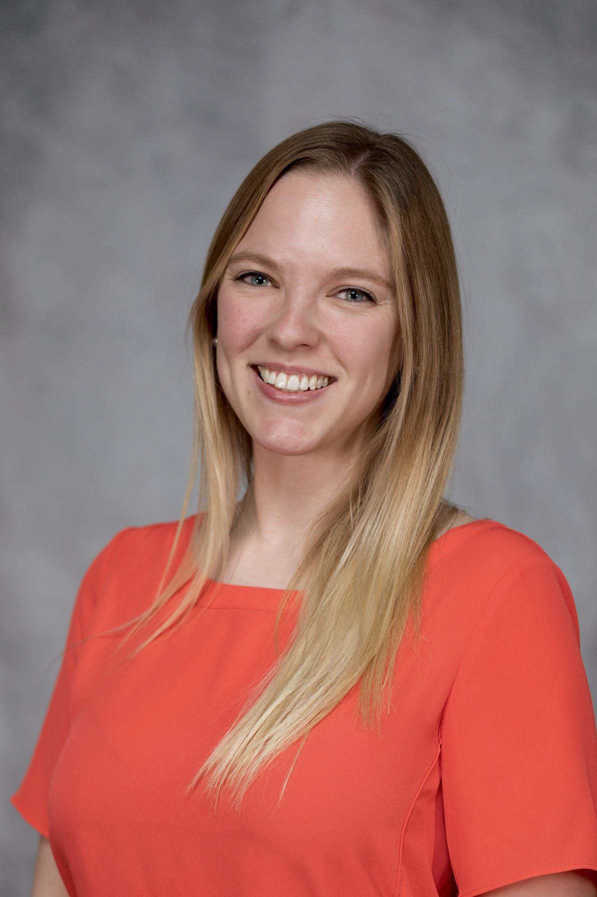
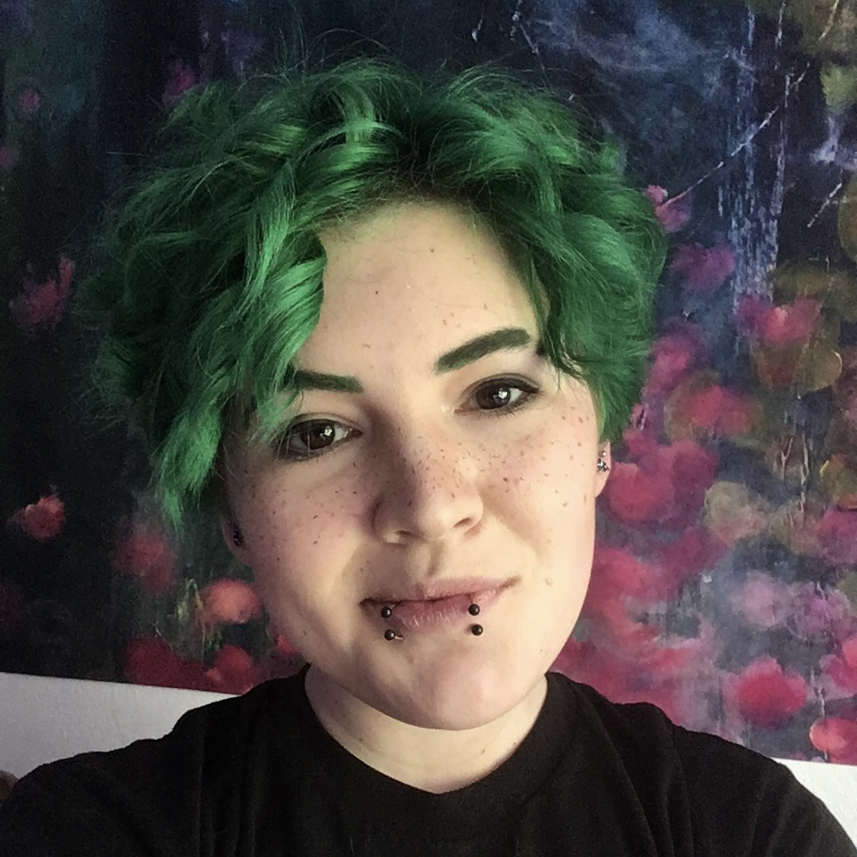

Eleanor Pressman, Colloquium planning team member & Communications lead
University of California, Davis
My research focuses on developing mechanistic models of dairy production systems
and using these models to evaluate sustainable management practices.

Gabrielle Robbins, Colloquium planning team leader
University of Minnesota
My research aims to develop a novel, cell-based immunotherapy for pediatric osteosarcoma
through the knockout of genes that inhibit cell function and the knockin of specific
chimeric antigen receptors (CARs) to improve tumor cell killing.

Juselyn Tupik, Colloquium planning team member & Coordinator
Virginia-Maryland College of Veterinary Medicine
My dissertation project focuses on understanding the NOD-Like Receptor (NLR)
innate immune response to the bacterial diseases Brucellosis and Lyme Disease.
Melissa Gronske, Colloquium planning team member & Secretary
North Carolina State University
My research focuses on G x E interactions in the skeletal development of medaka fish
(Oryzias latipes) in response to embryonic exposure to environmental contaminants.

Emily Herring, Alumni Coordinator
University of Georgia
My research aims to characterize the epidemiology of healthcare-associated
infections in horses in order to inform infection control policies and practices.

Jenna Cao, Co-communications lead
Colorado State University
My research aims to develop a translational model using pet dogs to develop
and improve cellular therapies for metastatic osteosarcoma.
Kieran Koch-Laskowski, Webmaster
Cornell University
I study gut physiology from a functional genomics perspective to dissect the cellular
and molecular mechanisms that control metabolic health.
Chelsea Iennarella-Servantez, Representative
Iowa State University
My dissertation project focuses on understanding the NOD-Like Receptor (NLR)
innate immune response to the bacterial diseases Brucellosis and Lyme Disease.

Lilli Heinen, Representative
Kansas State University
My research focuses on the application of modern data analytics strategies to beef cattle
feedlot issues, specifically Bovine Respiratory Disease and other common diseases on feedlots.
Katy Kesler, Representative
Michigan State University
My research involves exploring the role of zinc in improving neonatal dairy calf
immunity with the goal of improving vaccine responsiveness of young dairy calves.
Cassie Barber, Representative
Mississippi State University
JJ Stone, Representative
Tufts University

Samantha Hammack, Representative
University of Illinois Urbana Champaign
My research is interdisciplinary with biology and mechanical engineering and
involves equine sports medicine. It focuses on equine biomechanics, bone
remodeling and potential biomarkers of bone remodeling.

Sabina Hlavaty, Representative
University of Pennsylvania
I am fascinated by cancer biology and the use of dogs as natural models of human cancer.
For my PhD, I am focusing on understanding the use of acetate by tumors.

Eddy Cruz, Representative
University of Wisconsin-Madison
My research dissects the genetic regulation of anaerobic respiration in the gut
pathogen, Salmonella enterica. Understanding anaerobic respiration is important
to inform the design of therapeutics that dampen the metabolic fitness of pathogens
during intestinal colonization.

Greyson Moore, Representative
Virginia-Maryland College of Veterinary Medicine
My research interests intersect neurovirology and endocrinology to focus
on understanding how sex hormones regulate herpes simplex viral (HSV) disease
severity and recurrence frequency.